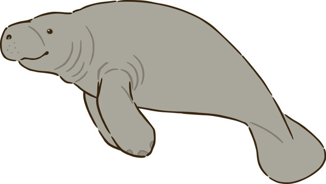

Manatees and what they are?
Manatees are large, fully aquatic, mostly herbivorous marine mammals sometimes known as sea cows. There are three accepted living species of Trichechidae, representing three of the four living species in the order Sirenia: The Amazonian manatee, the West Indian manatee, and the West African manatee. They measure up to 4.0 meters (13 ft 1 in) long, weigh as much as 590 kilograms (1,300 lb), and have paddle-like tails. Manatees are herbivores and eat over 60 different freshwater and saltwater plants. Manatees inhabit the shallow, marshy coastal areas and rivers of the Caribbean Sea, the Gulf of Mexico, the Amazon basin, and West Africa.The main causes of death for manatees are human-related issues, such as habitat destruction and human objects. Their slow-moving, curious nature has led to violent collisions with propeller-driven boats and ships. Some manatees have been found with over 50 scars on them from propeller blades. Natural causes of death include adverse temperatures, predation by crocodiles on young, and disease.
Manatees Behavior
Manatees are generally solitary animals. Manatees spend approximately 50% of the day sleeping submerged, surfacing for air regularly at intervals of less than 20 minutes. The remainder of the time is mostly spent grazing in shallow waters at depths of 1 to 2 m. Manatees are capable of understanding discrimination tasks and show signs of complex associative learning. Manatees emit a wide range of sounds used in communication, especially between cows and their calves. Adults communicate to maintain contact and during sexual and play behaviors. Taste and smell, in addition to sight, sound, and touch, may also be forms of communication.Leading causes of death.
The main causes of death for manatees are human-related issues, such as habitat destruction and human objects. Natural causes of death include adverse temperatures, predation by crocodiles on young, and disease. Manatees can also be crushed and isolated in water control structures (navigation locks, floodgates, etc.) and are occasionally killed by entanglement in fishing gear, such as crab pot float lines, box traps, and shark nets. While humans are allowed to swim with manatees in one area of Florida, there have been numerous charges of people harassing and disturbing the manatees. According to the United States Fish and Wildlife Service, approximately 99 manatee deaths each year are related to human activities. In January 2016, there were 43 manatee deaths in Florida alone. How can you help in stoping Manatee abuse?- If you spot a sick, injured, or orphaned manatee, or a manatee being harassed, you should immediately report it.
- Learn how to distinguish their wounds
- Become Knowledgeable of Manatees, here.
- Click here for additional info